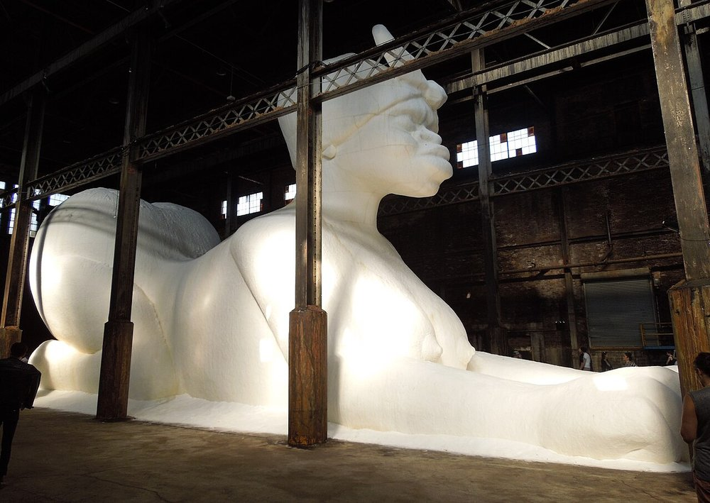

A Subtlety
Kara Walker · 2014 · Sugar, polystyrene, plastic, molasses
In copyright. Look and learn: shown for study, not for download. · Photo: Brooks patty, CC BY-SA 4.0
Creative Time commissioned this installation and a real estate developer, Two Trees, underwrote it. It was built with donated materials in the Syrup Shed of the Domino Sugar Refinery in Williamsburg, Brooklyn, and was open from May 10 to July 6, 2014. Fifteen other sculptures stood around the central figure. Visitors had to sign a waiver because of the asbestos and lead in the building. The name refers to the sugar sculptures of aristocratic European households in the Middle Ages.